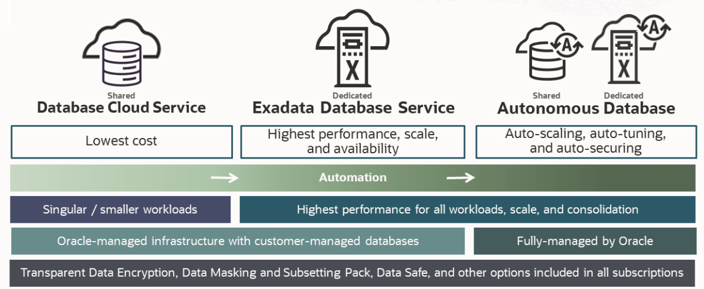
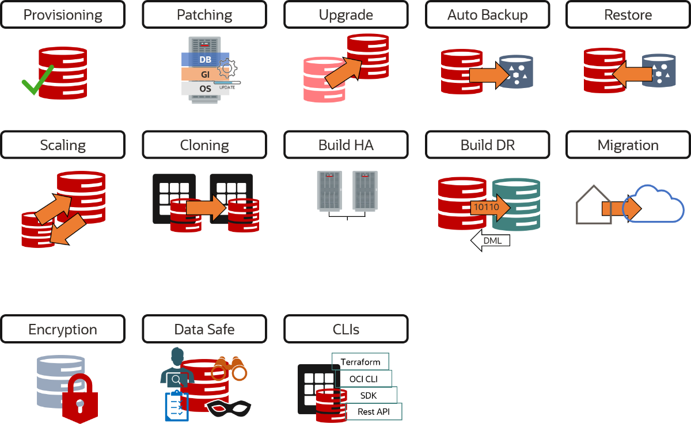
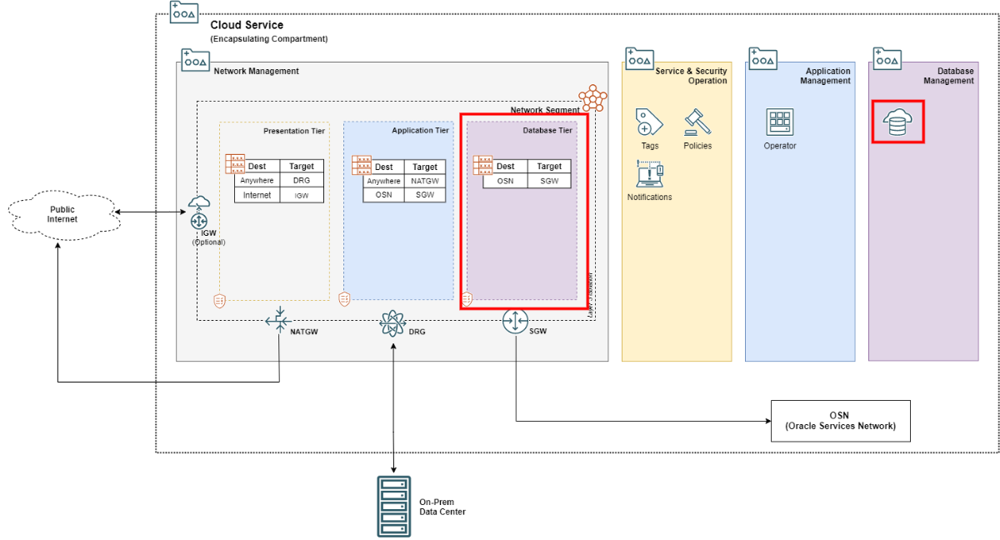

<div class="initial-content">
  <div id="main" role="main">

  <article class="page has-sidebar" itemscope itemtype="https://schema.org/CreativeWork">
    <meta itemprop="headline" content="Database Infrastructure">
    
    <meta itemprop="datePublished" content="2021-12-01T12:00:00+00:00">
    


    <header>
      <h1 id="page-title" class="page__title" itemprop="headline">Database Infrastructure
</h1>
      


    </header>

    <section class="page__content" itemprop="text">
      

        <picture class="aligncenter">
                <source srcset="assets/landing-zone.png 1x" />
                
            </picture>

<h2 id="overview-of-the-oracle-database-cloud-service">Overview of the Oracle Database Cloud Service</h2>

<figure class="aligncenter">
              <picture>
                  <source srcset="assets/dbcs_overview.png 1x" />
                  
              </picture>
              <figcaption>Database System Overview</figcaption>
            </figure>

<p>The Oracle Database Cloud Service offers autonomous and co-managed Oracle Database cloud solutions. Autonomous databases are preconfigured, fully-managed environments that are suitable for either transaction processing or data warehouse workloads. Co-managed solutions are virtual machine and Exadata DB systems that you can customize with the resources and settings that meet your needs.</p>

<p>You can quickly provision an Autonomous Database or co-managed DB system. You have full access to the features and operations available with the database, but Oracle owns and manages the infrastructure.</p>

<p>You can also extend co-managed database services into your data center by using Exadata Cloud@Customer, which applies the combined power of Exadata and Oracle Cloud Infrastructure while enabling you to meet your organization’s data-residency requirements.</p>

<p>For details about each offering, start with the following overview topics:</p>

<ul>
  <li>
    <p><strong>Autonomous Databases</strong></p>

    <p>The Database service offers Oracle’s <a href="https://docs.oracle.com/en-us/iaas/Content/Database/Concepts/adboverview.htm#Overview_of_Autonomous_Databases">Autonomous Databases</a> with transaction processing and data warehouse workload types.</p>
  </li>
  <li>
    <p><strong>Co-managed Systems</strong></p>

    <ul>
      <li><a href="https://docs.oracle.com/en-us/iaas/Content/Database/Concepts/overview.htm#Bare">Virtual Machine DB Systems</a></li>
      <li><a href="https://docs.oracle.com/en-us/iaas/Content/Database/Concepts/exaoverview.htm#Exadata_DB_Systems">Exadata Cloud Service</a></li>
      <li><a href="https://docs.oracle.com/en-us/iaas/exadata/index.html">Exadata Cloud@Customer</a></li>
    </ul>
  </li>
</ul>

<h2 id="database-cloud-service-on-virtual-machine">Database Cloud Service on Virtual Machine</h2>

<p>Database Cloud Service offers full-featured Oracle Database cloud instances:</p>

<ul>
  <li>Enterprise Edition or Standard Edition 2</li>
  <li>Multiple Oracle Database versions, including <a href="https://blogs.oracle.com/database/post/introducing-oracle-database-21c">21c</a></li>
  <li>4 tiers of Oracle Database License Included options or Bring Your Own License</li>
  <li>Enhanced with Cloud automation features</li>
</ul>

<p>In addition to our Oracle Database Cloud Solution (DBCS), we also offer managed MySQL Cloud Services and other Data Management Cloud Services.</p>

<h3 id="cloud-automation-under-customer-control---provisioning-patching-backup-disaster-recovery">Cloud automation under customer control - provisioning, patching, backup, disaster recovery</h3>

<figure class="aligncenter">
              <picture>
                  <source srcset="assets/dbcs_features.png 1x" />
                  
              </picture>
              <figcaption>DBCS Features</figcaption>
            </figure>

<h2 id="database-cloud-service-provisioning-using-terraform-and-oci-resource-manager">Database Cloud Service Provisioning using Terraform and OCI Resource Manager</h2>

<p>Database Cloud Service on VM is an exceptional entry into the world of cloud-supported database services. First, you keep full control of your database servers and databases. Plus, the service includes many convenient functions which simplify and accelerate the creation and configuration of database systems. But not only that, with just a few clicks your database can be enhanced with additional features to accommodate growing demands or needed adjustments. These include CPU and storage scaling as well as the creation of a standby database through Data Guard.</p>

<p>When creating a Database Cloud Service on VM all the cloud resources you need to get a fully operational database instance going are provisioned:</p>

<ul>
  <li>Compute instance instantiates a Real Application Cluster (RAC)</li>
  <li>Block storage is made available to the database nodes</li>
  <li>Object Store is used to store automated and manual backups</li>
</ul>

<blockquote class="notice">
  <p><strong>Notes:</strong></p>

  <ul>
    <li>
      <p>All DBCS resources are only accessible through the Database System resource, not through the individual categories as Compute Instances or Object Store.</p>
    </li>
    <li>
      <p>All DBCS components are created as part of the Database System resource. Therefore you won’t find them under the Compute Instance or Object Storage Categories in the OCI console.</p>
    </li>
  </ul>
</blockquote>

<h2 id="prepare-the-ocloud-landing-zone">Prepare the OCloud Landing Zone</h2>

<p>Before we create a DBCS on VM resource, we’ll set up a Compartment, a Virtual Cloud Network (VCN), and a Subnet. You can do this either through the OCI console or through Terraform using OCI’s Rest API. The latter method is used for this session.</p>

<p><strong>Reference:</strong> Instructions on how to deploy OCloud Landing Zone can be found in this <a href="https://github.com/oracle-devrel/terraform-oci-ocloud-landing-zone">article</a>.</p>

<h3 id="dbcs-architecture">DBCS architecture</h3>

<figure class="aligncenter">
              <picture>
                  <source srcset="assets/ocloud_dbcs_architecture.png 1x" />
                  
              </picture>
              <figcaption>DBCS Architecture</figcaption>
            </figure>

<p>Policies for the Database Compartment allow members of the dbops group to create database subnets and to manage database-family resources:</p>

<div class="language-sql highlighter-rouge"><div class="highlight"><pre class="highlight"><code><span class="o">-</span> <span class="n">ALLOW</span> <span class="k">GROUP</span> <span class="o">&lt;</span><span class="n">label</span><span class="o">&gt;</span><span class="n">_dbops</span> <span class="n">manage</span> <span class="k">database</span><span class="o">-</span><span class="n">family</span> <span class="k">in</span> <span class="n">compartment</span> <span class="o">&lt;</span><span class="n">label</span><span class="o">&gt;</span><span class="n">_database_compartment</span>
<span class="o">-</span> <span class="n">ALLOW</span> <span class="k">GROUP</span> <span class="o">&lt;</span><span class="n">label</span><span class="o">&gt;</span><span class="n">_dbops</span> <span class="k">read</span> <span class="k">all</span><span class="o">-</span><span class="n">resources</span> <span class="k">in</span> <span class="n">compartment</span> <span class="o">&lt;</span><span class="n">label</span><span class="o">&gt;</span><span class="n">_database_compartment</span>
<span class="o">-</span> <span class="n">ALLOW</span> <span class="k">GROUP</span> <span class="o">&lt;</span><span class="n">label</span><span class="o">&gt;</span><span class="n">_dbops</span> <span class="n">manage</span> <span class="n">subnets</span> <span class="k">in</span> <span class="n">compartment</span> <span class="o">&lt;</span><span class="n">label</span><span class="o">&gt;</span><span class="n">_database_compartment</span>
</code></pre></div></div>

<h2 id="ocloud-remote-stack">OCloud Remote Stack</h2>

<p>Now, to create the database system resource the OCI Rest API requires a target compartment and a target subnet. There are three different ways to collect information in OCI:</p>

<ol>
  <li>By default, the Terraform stack defines the required parameters itself, but they can also be entered by the user when the stack is created in OCI Resource Manager (ORM).</li>
  <li>
    <p>Both the <code class="language-plaintext highlighter-rouge">Database Compartment OCID</code> and <code class="language-plaintext highlighter-rouge">VNC OCID</code> are queried from OCI as data elements:</p>

    <div class="language-terraform highlighter-rouge"><div class="highlight"><pre class="highlight"><code>   <span class="c1"># In this example a list of all compartments within a Tenant is returned which is filtered by the database compartment name</span>
   <span class="k">data</span> <span class="s2">"oci_identity_compartments"</span> <span class="s2">"db_compartment"</span> <span class="p">{</span>
      <span class="nx">compartment_id</span> <span class="p">=</span> <span class="err">&lt;</span><span class="nx">tenancy_ocid</span><span class="err">&gt;</span>
      <span class="nx">compartment_id_in_subtree</span> <span class="p">=</span> <span class="kc">true</span>
      <span class="nx">state</span>          <span class="p">=</span> <span class="s2">"ACTIVE"</span>
      <span class="nx">filter</span> <span class="p">{</span>
         <span class="nx">name</span>   <span class="p">=</span> <span class="s2">"name"</span>
         <span class="nx">values</span> <span class="p">=</span> <span class="p">[</span> <span class="err">&lt;</span><span class="nx">Datenbank</span> <span class="nx">Compartment</span> <span class="nx">Name</span><span class="err">&gt;</span> <span class="p">]</span>
      <span class="p">}</span>
   <span class="p">}</span>
</code></pre></div>    </div>
  </li>
  <li>
    <p>Terraform supports direct access to the output data of previously provisioned stacks through <code class="language-plaintext highlighter-rouge">oci_resourcemanager_stack_tf_stat</code> and <code class="language-plaintext highlighter-rouge">terraform_remote_state</code> resources. For this object-relational mapping (ORM), Terraform extracts the desired information from the Terraform <code class="language-plaintext highlighter-rouge">tfstate</code> file which is stored as part of a successfully deployed OCI Stack:</p>

    <div class="language-terraform highlighter-rouge"><div class="highlight"><pre class="highlight"><code>   <span class="k">data</span> <span class="s2">"oci_resourcemanager_stack_tf_state"</span> <span class="s2">"stack1_tf_state"</span> <span class="p">{</span>
      <span class="nx">stack_id</span>   <span class="p">=</span> <span class="err">&lt;</span><span class="nx">stack</span> <span class="nx">id</span><span class="err">&gt;</span>
      <span class="nx">local_path</span> <span class="p">=</span> <span class="s2">"stack1.tfstate"</span>
   <span class="p">}</span>

   <span class="c1"># Load the pulled state file into a remote state data source</span>
   <span class="k">data</span> <span class="s2">"terraform_remote_state"</span> <span class="s2">"external_stack_remote_state"</span> <span class="p">{</span>
      <span class="nx">backend</span> <span class="p">=</span> <span class="s2">"local"</span>
      <span class="nx">config</span> <span class="p">=</span> <span class="p">{</span>
         <span class="nx">path</span> <span class="p">=</span> <span class="s2">"</span><span class="k">${data</span><span class="p">.</span><span class="nx">oci_resourcemanager_stack_tf_state</span><span class="p">.</span><span class="nx">stack1_tf_state</span><span class="p">.</span><span class="nx">local_path</span><span class="k">}</span><span class="s2">"</span>
      <span class="p">}</span>
   <span class="p">}</span>
</code></pre></div>    </div>
  </li>
</ol>

<blockquote>
  <p class="notice"><strong>Note:</strong> In practice, several of these methods will likely be used in combination.</p>
</blockquote>

<h2 id="creating-the-database-subnet">Creating the Database Subnet</h2>

<p>After validating the prerequisites for a DBCS on VM deployment, we’ll now provision the resources for the DBCS on a VM stack.</p>

<p>For this use case, all members of the dbops group should be able to create subnets and database resources within the Tenant’s Database Compartment’s limits. For creating subnets, we use a dedicated Terraform module that is provided by the terraform-oci-ocloud-landing-zone repository.</p>

<p><strong>Reference:</strong> <a href="https://github.com/oracle-devrel/terraform-oci-ocloud-landing-zone/tree/main/component/network_domain">Network domain</a></p>

<p>The <em>network_domain</em> module, which is also used as part of the landing zone provisioning, creates a private subnet as well as all required Security List Policies to communicate with the database system.</p>

<p>When sizing the subnet, you should pay attention to the minimum required IP addresses for a certain deployment type (single node vs RAC). The OCloud landing zone defines the bigger subnets for each service, but if the database architecture requires one large subnet, the Terraform function <code class="language-plaintext highlighter-rouge">cidrsubnets(prefix,newbits,netum)</code> allows you to split the address space into smaller chunks:</p>

<table>
  <thead>
    <tr>
      <th>service_segment_subnets</th>
      <th>key subnet</th>
    </tr>
  </thead>
  <tbody>
    <tr>
      <td>app</td>
      <td>10.0.0.0/26</td>
    </tr>
    <tr>
      <td>db</td>
      <td>10.0.0.64/26</td>
    </tr>
    <tr>
      <td>pres</td>
      <td>10.0.1.0/26</td>
    </tr>
    <tr>
      <td>k8s</td>
      <td>10.0.0.128/25</td>
    </tr>
  </tbody>
</table>

<p>Below, you can see an example where CIDIR block 10.0.0.64/26 is split into four subnets by adding two additional bits (newbits):</p>

<div class="language-terraform highlighter-rouge"><div class="highlight"><pre class="highlight"><code><span class="err">&gt;</span> <span class="nx">cidrsubnets</span><span class="err">(</span><span class="s2">"10.0.0.64/26"</span><span class="err">,</span><span class="mi">2</span><span class="err">,</span><span class="mi">2</span><span class="err">,</span><span class="mi">2</span><span class="err">,</span><span class="mi">2</span><span class="err">)</span>
 <span class="nx">tolist</span><span class="err">(</span><span class="p">[</span>
   <span class="s2">"10.0.0.64/28"</span><span class="p">,</span>  <span class="err">---&gt;</span>  <span class="nx">cidrsubnet</span><span class="p">(</span><span class="s2">"10.0.0.64/26"</span><span class="p">,</span><span class="mi">2</span><span class="p">,</span><span class="mi">0</span><span class="p">)</span>
   <span class="s2">"10.0.0.80/28"</span><span class="p">,</span>  <span class="err">---&gt;</span>  <span class="nx">cidrsubnet</span><span class="p">(</span><span class="s2">"10.0.0.64/26"</span><span class="p">,</span><span class="mi">2</span><span class="p">,</span><span class="mi">1</span><span class="p">)</span>
    <span class="s2">"10.0.0.96/28"</span><span class="p">,</span>  <span class="err">---&gt;</span>  <span class="nx">cidrsubnet</span><span class="p">(</span><span class="s2">"10.0.0.64/26"</span><span class="p">,</span><span class="mi">2</span><span class="p">,</span><span class="mi">2</span><span class="p">)</span>
   <span class="s2">"10.0.0.112/28"</span><span class="p">,</span>  <span class="err">---&gt;</span>  <span class="nx">cidrsubnet</span><span class="p">(</span><span class="s2">"10.0.0.64/26"</span><span class="p">,</span><span class="mi">2</span><span class="p">,</span><span class="mi">3</span><span class="p">)</span>
<span class="p">]</span><span class="err">)</span>
</code></pre></div></div>

<p>The Terraform module <code class="language-plaintext highlighter-rouge">network_domain</code> creates a private subnet for a given database compartment and VNC. It also sets all ingress rules to allow ssh access to the Database nodes and to communicate with the database itself. Last but not least, it sets all egress rules to access  both Object Storage and YUM Repository on the Service Network.</p>

<p>It’s important to note here that the <em>db_domain</em> module doesn’t define its own Bastion Service since it’s available through the application subnet. However, after provisioning the database, a couple of Bastion Sessions are created (ssh, sqlnet) aiming to validate database system connectivity. Once the Time-to-Live has been exceeded for the Bastion Sessions, they will be terminated automatically.</p>

<h3 id="resource-schema">Resource Schema</h3>

<div class="language-terraform highlighter-rouge"><div class="highlight"><pre class="highlight"><code><span class="k">module</span> <span class="s2">"db_domain"</span> <span class="p">{</span>
  <span class="err">…</span>
  <span class="nx">source</span> <span class="p">=</span> <span class="s2">"github.com/oracle-devrel/terraform-oci-ocloud-landing-zone/component/network_domain"</span>
  <span class="nx">config</span>  <span class="p">=</span> <span class="p">{</span>
    <span class="nx">service_id</span>     <span class="p">=</span> <span class="err">&lt;</span><span class="nx">Container</span> <span class="nx">Compartment</span> <span class="nx">ID</span><span class="err">&gt;</span>
    <span class="nx">compartment_id</span> <span class="p">=</span> <span class="err">&lt;</span><span class="nx">Database</span> <span class="nx">Compartment</span> <span class="nx">ID</span><span class="err">&gt;</span>
    <span class="nx">vcn_id</span>         <span class="p">=</span> <span class="err">&lt;</span><span class="nx">VNC</span> <span class="nx">ID</span><span class="err">&gt;</span>
    <span class="nx">anywhere</span>       <span class="p">=</span> <span class="err">“</span><span class="mf">0.0</span><span class="p">.</span><span class="mf">0.0</span><span class="err">/</span><span class="mi">0</span><span class="err">”</span>
    <span class="nx">defined_tags</span>   <span class="p">=</span> <span class="kc">null</span>
    <span class="nx">freeform_tags</span>  <span class="p">=</span> <span class="p">{</span><span class="s2">"framework"</span> <span class="p">=</span> <span class="s2">"ocloud"</span><span class="p">}</span>
  <span class="p">}</span>
  <span class="c1"># Subnet Requirements</span>
  <span class="c1"># DB System Type, # Required IP Addresses, Minimum Subnet Size</span>
  <span class="c1"># 1-node virtual machine, 1 + 3 reserved in subnet = 4, /30 (4 IP addresses)</span>
  <span class="c1"># 2-node RAC virtual machine, (2 addresses * 2 nodes) + 3 for SCANs + 3 reserved in subnet = 10, /28 (16 IP addresses)</span>
  <span class="nx">subnet</span>  <span class="p">=</span> <span class="p">{</span>
    <span class="c1"># Select the predefined name per index</span>
    <span class="nx">domain</span>                      <span class="p">=</span> <span class="err">&lt;</span><span class="nx">predefined</span> <span class="nx">subnet</span> <span class="nx">postfix</span> <span class="p">(</span><span class="nx">See</span> <span class="nx">OCloud</span> <span class="nx">Landing</span> <span class="nx">Zone</span><span class="p">,</span> <span class="k">module</span> <span class="nx">service_segment</span><span class="p">)</span><span class="err">&gt;</span>
    <span class="c1"># Select the predefined range per index</span>
    <span class="nx">cidr_block</span>                  <span class="p">=</span> <span class="err">&lt;</span><span class="nx">predefined</span> <span class="nx">subnet</span> <span class="nx">cidr</span> <span class="nx">block</span> <span class="p">(</span><span class="nx">See</span> <span class="nx">OCloud</span> <span class="nx">Landing</span> <span class="nx">Zone</span><span class="p">,</span> <span class="k">module</span> <span class="nx">service_segment</span><span class="p">)</span><span class="err">&gt;&gt;</span>
    <span class="c1"># Create subnet as private</span>
    <span class="nx">prohibit_public_ip_on_vnic</span>  <span class="p">=</span> <span class="kc">true</span> <span class="c1"># Creates a private subnet</span>
    <span class="nx">dhcp_options_id</span>             <span class="p">=</span> <span class="kc">null</span>
    <span class="nx">route_table_id</span>              <span class="p">=</span> <span class="err">&lt;</span><span class="nx">Routing</span> <span class="nx">Table</span> <span class="nx">ID</span> <span class="nx">for</span> <span class="nx">Oracle</span> <span class="nx">Service</span> <span class="nx">Network</span> <span class="nx">connectivity</span> <span class="nx">which</span> <span class="nx">is</span> <span class="nx">created</span> <span class="nx">by</span> <span class="nx">the</span> <span class="nx">OCloud</span> <span class="nx">Landing</span> <span class="nx">Zone</span><span class="err">&gt;</span>
  <span class="err">}</span>
  <span class="nx">bastion</span>  <span class="p">=</span> <span class="p">{</span>
    <span class="nx">create</span>            <span class="p">=</span> <span class="kc">false</span> <span class="c1"># Determine whether a bastion service will be deployed and attached</span>
    <span class="nx">client_allow_cidr</span> <span class="p">=</span> <span class="p">[]</span>
    <span class="nx">max_session_ttl</span>   <span class="p">=</span> <span class="kc">null</span>
  <span class="p">}</span>
  <span class="c1"># Security List Policies</span>
  <span class="nx">tcp_ports</span> <span class="p">=</span> <span class="p">{</span>
    <span class="c1">// [protocol, source_cidr, destination port min, max]</span>
    <span class="nx">ingress</span> <span class="p">=</span> <span class="p">[</span>
      <span class="p">[</span><span class="s2">"ssh"</span><span class="p">,</span> <span class="err">“</span><span class="mf">0.0</span><span class="p">.</span><span class="mf">0.0</span><span class="err">/</span><span class="mi">0</span><span class="err">”</span><span class="p">,</span> <span class="mi">22</span><span class="p">,</span> <span class="mi">22</span><span class="p">],</span> <span class="c1"># DBnode access</span>
      <span class="p">[</span><span class="s2">"http"</span><span class="p">,</span> <span class="err">“</span><span class="mf">0.0</span><span class="p">.</span><span class="mf">0.0</span><span class="err">/</span><span class="mi">0</span><span class="err">”</span><span class="p">,</span> <span class="mi">80</span><span class="p">,</span> <span class="mi">80</span><span class="p">],</span> <span class="c1"># APEX access</span>
      <span class="p">[</span><span class="s2">"https"</span><span class="p">,</span> <span class="err">“</span><span class="mf">0.0</span><span class="p">.</span><span class="mf">0.0</span><span class="err">/</span><span class="mi">0</span><span class="err">”</span><span class="p">,</span> <span class="mi">443</span><span class="p">,</span> <span class="mi">443</span><span class="p">],</span> <span class="c1"># APEX access</span>
      <span class="p">[</span><span class="s2">"tcp"</span><span class="p">,</span> <span class="err">“</span><span class="mf">0.0</span><span class="p">.</span><span class="mf">0.0</span><span class="err">/</span><span class="mi">0</span><span class="err">”</span><span class="p">,</span> <span class="mi">1521</span><span class="p">,</span> <span class="mi">1522</span><span class="p">],</span> <span class="c1"># DB Access where 1521 is used for DBCS and 1522 for Autonomous DB</span>
      <span class="p">[</span><span class="s2">"tcp"</span><span class="p">,</span> <span class="err">“</span><span class="mf">0.0</span><span class="p">.</span><span class="mf">0.0</span><span class="err">/</span><span class="mi">0</span><span class="err">”</span><span class="p">,</span> <span class="mi">5500</span><span class="p">,</span> <span class="mi">5500</span><span class="p">],</span> <span class="c1"># Enterprise Manager Express access</span>
      <span class="p">[</span><span class="s2">"tcp"</span><span class="p">,</span> <span class="err">“</span><span class="mf">0.0</span><span class="p">.</span><span class="mf">0.0</span><span class="err">/</span><span class="mi">0</span><span class="err">”</span><span class="p">,</span> <span class="mi">6200</span><span class="p">,</span> <span class="mi">6200</span><span class="p">]</span> <span class="c1"># Enables the Oracle Notification Services (ONS) to communicate about Fast Application Notification (FAN) events</span>
    <span class="p">]</span>
  <span class="p">}</span>
</code></pre></div></div>

<h2 id="database-system-provisioning">Database System Provisioning</h2>

<p>Now that all of our prerequisite resources are created, we’re ready to set up the final components. The OCI resource <em>oci_database_db_system</em> provisions a database system, database nodes, and an initial CDB and PDB all in one step. Convenient, no? Note that the <em>oci_database_db_system</em> comes with many additional parameters to support other flavors of provisioning a database (e.g, creating a database instance from a backup or as clone from an existing database system). For this scenario, we’ll focus on a fresh database install. Refer to the <em>oci_database_db_system</em> resource documentation for further details.</p>

<div class="language-terraform highlighter-rouge"><div class="highlight"><pre class="highlight"><code><span class="k">resource</span> <span class="s2">"oci_database_db_system"</span> <span class="s2">"dbaas_db_system"</span> <span class="p">{</span>
  <span class="nx">availability_domain</span> <span class="p">=</span> <span class="err">&lt;</span><span class="nx">Availability</span> <span class="nx">Domain</span><span class="err">&gt;</span>
  <span class="nx">compartment_id</span>      <span class="p">=</span> <span class="err">&lt;</span><span class="nx">Database</span> <span class="nx">Compartment</span><span class="err">&gt;</span>
  <span class="nx">database_edition</span>    <span class="p">=</span> <span class="err">&lt;</span><span class="nx">Database</span> <span class="nx">Edition</span><span class="p">,</span> <span class="nx">i</span><span class="p">.</span><span class="nx">e</span><span class="p">.</span> <span class="nx">ENTERPRISE</span> <span class="nx">EDITION</span><span class="err">&gt;</span>

  <span class="nx">db_home</span> <span class="p">{</span>
    <span class="nx">database</span> <span class="p">{</span>
      <span class="nx">admin_password</span> <span class="p">=</span> <span class="err">&lt;</span><span class="nx">SYS</span> <span class="nx">PASSWORD</span><span class="err">&gt;</span>
      <span class="nx">db_name</span>        <span class="p">=</span> <span class="err">&lt;</span><span class="nx">CDB</span> <span class="nx">Name</span><span class="err">&gt;</span>
      <span class="nx">character_set</span>  <span class="p">=</span> <span class="err">&lt;</span><span class="nx">Character</span> <span class="nx">Set</span><span class="err">&gt;</span>
      <span class="nx">ncharacter_set</span> <span class="p">=</span> <span class="err">&lt;</span><span class="nx">International</span> <span class="nx">Character</span> <span class="nx">Set</span><span class="err">&gt;</span>
      <span class="nx">db_workload</span>    <span class="p">=</span> <span class="err">&lt;</span><span class="nx">Workload</span> <span class="nx">Type</span><span class="p">,</span> <span class="nx">OLTP</span> <span class="nx">or</span> <span class="nx">DW</span><span class="err">&gt;</span>
      <span class="nx">pdb_name</span>       <span class="p">=</span> <span class="err">&lt;</span><span class="nx">PDB</span> <span class="nx">Name</span><span class="err">&gt;</span>
      <span class="nx">tde_wallet_password</span> <span class="p">=</span> <span class="err">&lt;</span><span class="nx">TDE</span> <span class="nx">Wallet</span> <span class="nx">Password</span> <span class="nx">if</span> <span class="nx">it</span> <span class="nx">is</span> <span class="nx">different</span> <span class="nx">to</span> <span class="nx">the</span> <span class="nx">admin_password</span><span class="err">&gt;</span>

      <span class="nx">db_backup_config</span> <span class="p">{</span>
        <span class="nx">auto_backup_enabled</span> <span class="p">=</span> <span class="err">&lt;</span><span class="nx">Is</span> <span class="nx">automated</span> <span class="nx">backup</span> <span class="nx">to</span> <span class="nx">Object</span> <span class="nx">Storage</span> <span class="nx">enabled</span><span class="err">?&gt;</span>
        <span class="nx">auto_backup_window</span> <span class="p">=</span> <span class="err">&lt;</span><span class="nx">Two</span> <span class="nx">hour</span> <span class="nx">time</span> <span class="nx">slot</span> <span class="nx">within</span> <span class="mi">24</span> <span class="nx">hour</span> <span class="nx">when</span> <span class="nx">the</span> <span class="nx">backup</span> <span class="nx">can</span> <span class="nx">take</span> <span class="nx">place</span><span class="err">&gt;</span>
        <span class="nx">recovery_window_in_days</span> <span class="err">=</span> <span class="err">&lt;</span><span class="nx">Retention</span> <span class="nx">Period</span><span class="err">&gt;</span>
      <span class="p">}</span>
    <span class="p">}</span>

    <span class="nx">db_version</span>   <span class="p">=</span> <span class="err">&lt;</span><span class="nx">Database</span> <span class="nx">Version</span><span class="p">,</span> <span class="nx">whereas</span> <span class="mf">19.0</span><span class="p">.</span><span class="mf">0.0</span><span class="p">.</span><span class="mi">0</span> <span class="nx">corresponds</span> <span class="nx">to</span> <span class="nx">the</span> <span class="nx">latest</span> <span class="nx">available</span> <span class="nx">version</span><span class="err">,</span> <span class="nx">i</span><span class="p">.</span><span class="nx">e</span><span class="p">.</span> <span class="mf">19.12</span><span class="p">.</span><span class="mf">0.0</span><span class="p">.</span><span class="mi">0</span>
    <span class="nx">display_name</span> <span class="p">=</span> <span class="err">&lt;&gt;</span>
  <span class="nx">shape</span>           <span class="p">=</span> <span class="err">&lt;</span><span class="nx">Database</span> <span class="nx">Node</span> <span class="nx">Shape</span> <span class="nx">which</span> <span class="nx">defines</span> <span class="nx">the</span> <span class="nx">number</span> <span class="nx">of</span> <span class="nx">OCPUs</span> <span class="nx">and</span> <span class="nx">Memory</span><span class="err">&gt;</span>
  <span class="nx">subnet_id</span>       <span class="err">=</span> <span class="err">&lt;</span><span class="nx">Target</span> <span class="nx">Database</span> <span class="nx">Subnet</span><span class="err">&gt;</span>
  <span class="nx">ssh_public_keys</span> <span class="p">=</span> <span class="p">[</span><span class="err">&lt;</span><span class="nx">Public</span> <span class="nx">Key</span> <span class="nx">for</span> <span class="nx">ssh</span> <span class="nx">access</span><span class="err">&gt;</span><span class="p">]</span>
  <span class="nx">display_name</span>    <span class="p">=</span> <span class="err">&lt;</span><span class="nx">OCI</span> <span class="nx">Display</span> <span class="nx">Name</span><span class="err">&gt;</span>
  <span class="nx">hostname</span>                <span class="p">=</span> <span class="err">&lt;</span><span class="nx">DB</span> <span class="nx">Node</span> <span class="nx">Hostname</span> <span class="nx">Prefix</span><span class="err">&gt;</span>
  <span class="nx">data_storage_size_in_gb</span> <span class="p">=</span> <span class="err">&lt;</span><span class="nx">Initial</span> <span class="nx">Database</span> <span class="nx">Storage</span><span class="err">&gt;</span>
  <span class="nx">license_model</span>           <span class="p">=</span> <span class="err">&lt;</span><span class="nx">Database</span> <span class="nx">License</span> <span class="nx">is</span> <span class="nx">either</span> <span class="nx">included</span> <span class="nx">or</span> <span class="nx">transferred</span> <span class="nx">from</span> <span class="nx">On</span> <span class="nx">Premise</span> <span class="err">&gt;</span>
  <span class="nx">node_count</span>              <span class="p">=</span> <span class="err">&lt;</span><span class="nx">Database</span> <span class="nx">Node</span> <span class="nx">Count</span><span class="p">,</span> <span class="mi">1</span> <span class="nx">or</span> <span class="mi">2</span> <span class="nx">for</span> <span class="nx">a</span> <span class="nx">Real</span> <span class="nx">Application</span> <span class="nx">Cluster</span><span class="err">&gt;</span>
  <span class="nx">cluster_name</span>            <span class="p">=</span> <span class="err">&lt;</span><span class="nx">RAC</span> <span class="nx">Cluster</span> <span class="nx">name</span><span class="err">&gt;</span>
  <span class="nx">nsg_ids</span>                 <span class="p">=</span> <span class="err">&lt;</span><span class="nx">Optional</span> <span class="nx">Network</span> <span class="nx">Security</span> <span class="nx">Group</span><span class="err">&gt;</span>
  <span class="nx">db_system_options</span> <span class="p">{</span>
    <span class="nx">storage_management</span> <span class="p">=</span> <span class="err">&lt;</span><span class="nx">LVM</span> <span class="nx">or</span> <span class="nx">ASM</span><span class="err">&gt;</span>
  <span class="p">}</span>
<span class="p">}</span>
</code></pre></div></div>

<h2 id="oci-resource-manager">OCI Resource Manager</h2>

<p>To use DBCS on a VM stack with Resource Manager, you’ll need to use one of the following methods:</p>

<ul>
  <li><a href="https://github.com/oracle-devrel/terraform-oci-ocloud-db/tree/main">download the code as a zip-file</a><br />
After extracting the archive, select <strong>Deploy to Oracle Cloud</strong> within the Github repository’s <a href="https://github.com/oracle-devrel/terraform-oci-ocloud-db/blob/updates/README.md">Readme</a> for further information.</li>
  <li>create your own cloned repository on Gitlab or Github<br />
Note that the DBCS stack references <a href="https://github.com/oracle-devrel/terraform-oci-ocloud-landing-zone/tree/main/component/network_domain">network_domain</a>, so if you are using a customized version of the landing zone stack you might have to update the <code class="language-plaintext highlighter-rouge">source</code> parameter of the <em>db_domain</em> module.</li>
</ul>

<h3 id="deploy-to-oracle-cloud">Deploy to Oracle Cloud</h3>

<p>For this session, we’ll use the <strong>Deploy to Oracle Cloud</strong> method from the stack’s Readme. This option automatically redirects you to the OCI Console login, and after authentication opens Resource Manager. <strong>Package URL</strong> points to the stack artifact which is stored within the Github repository. Finally, confirm the <strong>Terms of Use</strong>.</p>

<h4 id="setting-up-resource-manager">Setting up Resource Manager</h4>

<ul>
  <li><strong>Configure manually</strong>
    <ol>
      <li><strong>Name the DBCS stack and select a compartment -</strong> To get started, let’s enter a meaningful name for your DBCS stack and choose a Compartment where your stack resource will be created.
        <blockquote class="notice">
          <p><strong>Note:</strong> The stack compartment may differ from the Compartment where the actual infrastructure resources reside.</p>
        </blockquote>
      </li>
      <li>
        <p><strong>Database configuration -</strong> On the next page, you’ll finalize the database system configuration. Enter the landing zone’s <code class="language-plaintext highlighter-rouge">Stack OCID</code>, which can be found in Resource Manager next to the landing zone stack. This avoids the need to re-enter a lot of the parameters and enables access to Output artifacts from the landing zone.</p>
      </li>
      <li>
        <p><strong>Database System display name -</strong> Enter a <em>Database System display name</em>. Then, either accept the shown default values or adjust them to you needs.</p>

        <p>For a default deployment, the following values are used:</p>

        <table>
          <thead>
            <tr>
              <th>Configuration</th>
              <th>Database Version</th>
              <th>Oracle Database Software Edition</th>
              <th>Shape</th>
              <th>OCPUs</th>
              <th>Storage(GB)</th>
            </tr>
          </thead>
          <tbody>
            <tr>
              <td>Small</td>
              <td>19c</td>
              <td>Oracle Enterprise Edition</td>
              <td>VM.Standard2.2</td>
              <td>2</td>
              <td>512</td>
            </tr>
          </tbody>
        </table>

        <table>
          <thead>
            <tr>
              <th>Deployment Type</th>
              <th>Storage Management Software</th>
              <th>Auto Backup enabled?</th>
              <th>Node Count</th>
            </tr>
          </thead>
          <tbody>
            <tr>
              <td>Fast Provisioning</td>
              <td>LVM</td>
              <td>false</td>
              <td>1</td>
            </tr>
          </tbody>
        </table>
      </li>
      <li><strong>Authentication -</strong> Finally, enter the admin or sys password and the public part of your ssh key. Make sure that you update the admin password after installation as the initial password will show up in the Terraform <code class="language-plaintext highlighter-rouge">tfstate</code> file.</li>
    </ol>
  </li>
  <li>
    <p><strong>Configure using a <code class="language-plaintext highlighter-rouge">terraform.tfvars</code> file</strong>
Another way to preconfigure parameters is to manually download the Terraform code from the repository and add a <code class="language-plaintext highlighter-rouge">terraform.tfvars</code> file. The respective values are shown as read-only parameters in the stack configuration.</p>

    <p><strong>Example:</strong></p>

    <div class="language-terraform highlighter-rouge"><div class="highlight"><pre class="highlight"><code>  <span class="nx">db_system_display_name</span> <span class="err">=</span> <span class="s2">"OCI Database System Display Name"</span>
  <span class="nx">db_system_ssh_public_keys</span> <span class="err">=</span> <span class="s2">"ssh-rsa …"</span>
  <span class="nx">db_system_db_home_database_admin_password</span> <span class="err">=</span> <span class="s2">"Password"</span>
  <span class="nx">stack_id</span> <span class="err">=</span> <span class="s2">"ocid1.ormstack.oc1.eu-frankfurt-1.aaaaaaaaqyekvuodrozodmn23zxi…"</span>
</code></pre></div>    </div>
  </li>
</ul>

<h4 id="alternative-methods-for-deploying-a-database-system">Alternative methods for deploying a database system</h4>

<p>OCloud DBCS on VM Stack supports other ways to deploy a database system, but they’re not the subject of this session:</p>

<ul>
  <li>Deploy a Database System into an existing subnet</li>
  <li>Overwrite Organization, Project and Environment labels which were defined by the corresponding OCloud Landing Zone</li>
  <li>Customize all stack parameters</li>
</ul>

<p>For further information, refer to the OCloud DBCS on VM stack’s <a href="https://github.com/oracle-devrel/terraform-oci-ocloud-db/blob/updates/README.md">Readme</a>.</p>

<h3 id="plan-but-dont-apply">Plan but don’t apply</h3>

<blockquote class="alert">
  <p>Create the stack but don’t check <strong>Run Apply</strong> because you should always plan your deployment first.</p>
</blockquote>

<p>This step is very important since it checks the stack code for syntax errors and determines exactly which OCI resources are going to be added, updated, or destroyed. Since OCI resources contain both updatable and non-updatable parameters, it’s recommended that the planning task be made a required part of the set up routine since updating a non-updatable value <em>may result in destruction of the resource</em>.</p>

<p><strong>Sample plan output:</strong></p>

<div class="language-console highlighter-rouge"><div class="highlight"><pre class="highlight"><code><span class="go">Plan: 9 to add, 0 to change, 0 to destroy.
</span></code></pre></div></div>

<p>After verifying the expected results, the stack can be applied.</p>
<blockquote class="notice">
  <p><strong>Note:</strong> For a “Small” configuration set up with “Fast Provisioning” it can take between 20 and 25 minutes before the database is available.</p>
</blockquote>

<h3 id="verify-db-node-and-database-access">Verify DB Node and Database access</h3>

<p>Once the Database System, Container Database, and Pluggable Database are available you can verify connectivity. Since our target resource is in a private subnet, the <em>Apps Compartments Bastion Service</em> needs to be used as the Bastion Sessions were created as part of the DBCS stack.</p>

<table>
  <thead>
    <tr>
      <th>Protocol</th>
      <th>Session type</th>
      <th>IP Address</th>
      <th>Port</th>
      <th>Maximum session time-to-live (min)</th>
      <th> </th>
    </tr>
  </thead>
  <tbody>
    <tr>
      <td>ssh</td>
      <td>SSH Port Forwarding Session</td>
      <td>Host IP</td>
      <td>22</td>
      <td>1800</td>
      <td>ssh access to database node(s)</td>
    </tr>
    <tr>
      <td>sqlnet</td>
      <td>SSH Port Forwarding Session</td>
      <td>Host IP</td>
      <td>1521</td>
      <td>1800</td>
      <td>sqlplus, sqlcl or sqldeveloper</td>
    </tr>
  </tbody>
</table>

<p><strong>SSH:</strong></p>

<p>Copy the SSH command from OCI console (Bastion Session) to create an SSH tunnel from <code class="language-plaintext highlighter-rouge">localhost:localport</code> to <code class="language-plaintext highlighter-rouge">&lt;database node ip address&gt;:22</code>.</p>

<div class="language-console highlighter-rouge"><div class="highlight"><pre class="highlight"><code><span class="gp">ssh -i &lt;private key file path&gt;</span><span class="w"> </span><span class="nt">-N</span> <span class="nt">-L</span> &lt;<span class="nb">local </span>port&gt;:&lt;database node ip address&gt;:22 <span class="nt">-p</span> 22 &lt;bastion session OCID&gt;@host.bastion.eu-frankfurt-1.oci.oraclecloud.com
</code></pre></div></div>

<p>To ssh to the DB Node, use the following command:</p>

<div class="language-console highlighter-rouge"><div class="highlight"><pre class="highlight"><code><span class="gp">ssh -i &lt;private key file&gt;</span><span class="w"> </span>opc@localhost <span class="nt">-p</span> &lt;<span class="nb">local </span>port&gt;
</code></pre></div></div>

<p><strong>Oracle SQL Developer:</strong></p>

<p>For an Oracle SQL Developer connection to either the CDB or PDB, copy the SSH command from OCI console (Bastion Session) to create an ssh tunnel from <code class="language-plaintext highlighter-rouge">localhost:localport</code> to <code class="language-plaintext highlighter-rouge">&lt;database node ip address&gt;:1521</code>:</p>

<div class="language-console highlighter-rouge"><div class="highlight"><pre class="highlight"><code><span class="gp">ssh -i &lt;private key file&gt;</span><span class="w"> </span><span class="nt">-N</span> <span class="nt">-L</span> &lt;<span class="nb">local </span>port&gt;:&lt;database node ip address&gt;:1521 <span class="nt">-p</span> 22 &lt;bastion session OCID&gt;@host.bastion.eu-frankfurt-1.oci.oraclecloud.com
</code></pre></div></div>

<p>Open sqldeveloper and create a new database connection:</p>

<table>
  <thead>
    <tr>
      <th>Parameter</th>
      <th>Value</th>
    </tr>
  </thead>
  <tbody>
    <tr>
      <td>Username</td>
      <td>sys</td>
    </tr>
    <tr>
      <td>Password</td>
      <td>admin password</td>
    </tr>
    <tr>
      <td>Role</td>
      <td>SYSDBA</td>
    </tr>
    <tr>
      <td>Connection Type</td>
      <td>Basic</td>
    </tr>
    <tr>
      <td>Hostname</td>
      <td>localhost</td>
    </tr>
    <tr>
      <td>Port</td>
      <td>[local sql port]</td>
    </tr>
    <tr>
      <td>Service Name</td>
      <td>CDB or PDB SERVICE_NAME from DBCS output</td>
    </tr>
  </tbody>
</table>

<p><strong>SQLcl and SQLplus:</strong></p>

<p>For a sqlcl or sqlplus connection, copy the SSH command from OCI console (Bastion Session) to create a SSH tunnel from <code class="language-plaintext highlighter-rouge">localhost:localport</code> to <code class="language-plaintext highlighter-rouge">&lt;database node ip address&gt;:1521</code>.</p>

<div class="language-console highlighter-rouge"><div class="highlight"><pre class="highlight"><code><span class="gp">ssh -i &lt;private key file&gt;</span><span class="w"> </span><span class="nt">-N</span> <span class="nt">-L</span> &lt;<span class="nb">local </span>port&gt;:&lt;database node ip address&gt;:1521 <span class="nt">-p</span> 22 &lt;bastion session OCID&gt;@host.bastion.eu-frankfurt-1.oci.oraclecloud.com
</code></pre></div></div>

<p><strong>Execute:</strong></p>

<div class="language-console highlighter-rouge"><div class="highlight"><pre class="highlight"><code><span class="gp">sql sys@localhost:1523/&lt;FQ Database Name&gt;</span><span class="w"> </span>AS sysdba
<span class="go">or
</span><span class="gp">sqlplus sys@&lt;FQ Database Name&gt;</span><span class="w"> </span>AS sysdba
</code></pre></div></div>

<p>And now you’ve logged into the database, congratulations!</p>

<h2 id="whats-next">What’s next</h2>

<p>We successfully provisioned a Database Cloud Service on VM Database instance. From here, you can apply further adjustments or add additional stacks to your OCI Infrastructure in your Tenancy.</p>

<p>Happy building!</p>

<p>Up next, <a href="./getting-started-with-oci-step-4-app-infrastructure.md">App Infrastructure</a>.</p>

<!--- links -->


          <div class="sidebar sticky">
    <!-- <p><strong>Tags:</strong> <span class="tags">

            
            <a class="animated-link tag" href="/topics/open-source">open-source</a>
            <a class="animated-link tag" href="/topics/terraform">terraform</a>
            <a class="animated-link tag" href="/topics/iac">iac</a>
            <a class="animated-link tag" href="/topics/devops">devops</a>
            <a class="animated-link tag" href="/topics/get-started">get-started</a>
            </span>
    </p> -->
  


<div itemscope itemtype="https://schema.org/Person">

  

  <div class="author__content">
    
      <h3 class="author__name" itemprop="name">Malte Menkhoff</h3>
    
    
      <div class="author__bio" itemprop="description">
        <p>Malte is a passioned solution architect and is supporting customers in the DACH region in migrating to OCI.</p>

      </div>
    
  </div>

  <div class="author__urls-wrapper">
    <ul class="author__urls social-icons">
      

      

      

      
        <li>
          <a href="mailto:malte.menkhoff@oracle.com">
            <meta itemprop="email" content="malte.menkhoff@oracle.com" />
            <i class="fas fa-fw fa-envelope-square" aria-hidden="true"></i><span class="label">Email</span>
          </a>
        </li>
      

      

      

      

      

      

      

      

      

      
        <li>
          <a href="https://github.com/kubemen" itemprop="sameAs" rel="nofollow noopener noreferrer">
            <i class="fab fa-fw fa-github" aria-hidden="true"></i><span class="label">GitHub</span>
          </a>
        </li>
      

      

      

      

      

      

      

      

      

      

      

      

      

      

      
    </ul>
  </div>
</div>

  
  
  

  </div>


      </section>

      <footer class="page__meta">
        
        


        

  <p class="page__date"><strong><i class="fas fa-fw fa-calendar-alt" aria-hidden="true"></i> Updated:</strong> <time datetime="2021-12-01T12:00:00+00:00">December 1, 2021</time></p>


      </footer>
    </div>

  </article>
</div>

</div>

